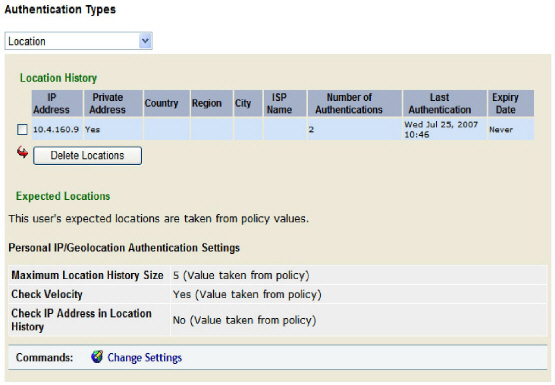
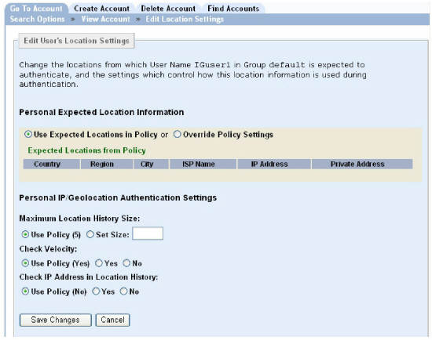
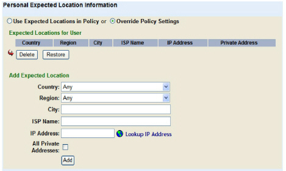
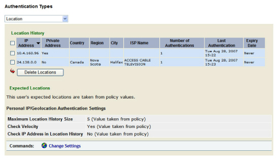
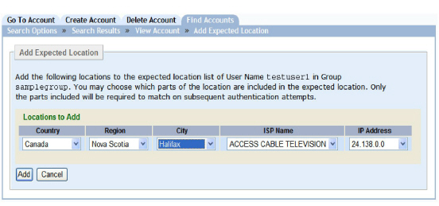
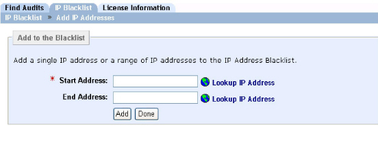

|
IdentityGuard Server 12.0 Administration Guide |
|
IdentityGuard Server 12.0 Administration Guide |
Administrators with applicable permissions can override several IP/Geolocation policy settings for individual users. Administrators can also edit location history lists and set up expected location lists for users.
This section includes:
● To locate IP/Geolocation information for a user
● To delete location history entries for a user
● To manage the expected location list for a user
● To modify personal IP/Geolocation settings for a user
● To add a location from the Location History to the Personal Expected Location list
● To convert an IP address to a location
To locate IP/Geolocation information for a user
1. Log in to the Entrust IdentityGuard Administration interface as the administrator.
 On the
Windows computer where Entrust IdentityGuard is installed
On the
Windows computer where Entrust IdentityGuard is installed
2. Click User Accounts on the menu bar.
3. Find a specific user in one of two ways:
● use the Go To Account tab (see To search for information about one user)
● use the Find Accounts tab (see To search for information about one or more users)
The View Account page appears.
4. Under Authentication Types on the user’s Account Information pane, click Location.
The user’s location information appears.

The Location policy settings are divided into three sections:
● Location History. This section lists the user’s recent location history. You can remove one or more entries from the list. (See To delete location history entries for a user.)
● Expected Locations. This section lists information about the expected locations list that applies to the user. You can set up a personal expected location list for the user. (See To manage the expected location list for a user.)
● Personal IP/Geolocation Authentication Settings. This section lists the current IP/Geolocation policy settings that apply to the user. You can override several policy settings or reinstate those policy settings. (See To modify personal IP/Geolocation settings for a user.)
To delete location history entries for a user
1. Locate the IP/Geolocation information for the user (see To locate IP/Geolocation information for a user).
You can delete one or more location entries.
2. To delete a location history entry, select its check box and click Delete Locations.
3. Click OK to complete the deletion. (This operation cannot be undone.)
To manage the expected location list for a user
1. Locate the IP/Geolocation information for the user and open the settings for editing (see To locate IP/Geolocation information for a user).
2. Click Change Settings.
The Edit Location Settings page appears. The page has two sections: Personal Expected Location Information and Personal IP/Geolocation Authentication Settings.

3. To have a user use the group’s expected location list set by policy, select Use Expected Locations in Policy under Personal Expected Location Information.
If the user has a personal expected location list, and you select the Use Expected Locations in Policy option to revert to the group’s expected location list, any entries in the personal list are lost once you save the changes.
4. To allow for the use of an expected location list for the user, select Override Policy Settings.

5. To create an expected location list for the user, you need the userSetExpectedLocations permission and the ipLocationGet permission. Complete one or more of the following:
● To add a location, enter as many details as possible under Add Expected Location. Click Add.
● To get the location details for a IP address, enter the address in the IP Address field and click Lookup IP Address. Entrust IdentityGuard looks up the address in the IP data file and populates the applicable fields. Click Add to add the location to the list.
● To add all of your internal private addresses to the group’s expected location list, select the All Private Addresses, Click Add. This means that any user logging in from one of your private addresses passes the expected location test. Alternatively, you can enter a single private address in the IP Address field. Click Add.
6. To delete a location, select its check box and click Delete. To reverse the deletion, click Restore. (Using Restore returns the entire list to its original state before you began editing.)
7. Click Save Changes.
For more information about expected locations, see Using the expected IP location list.
To modify personal IP/Geolocation settings for a user
1. Locate the Location information for the user and open the settings for editing (see To locate IP/Geolocation information for a user).
2. Click Change Settings.
The Edit Location Settings page appears. The page has two sections: Personal Expected Location Information and Personal IP/Geolocation Authentication Settings.
3. Move to the Personal IP/Geolocation Authentication Settings section. It lists three policies settings you can override at the user level. Each setting shows the actual policy setting in parentheses next to the Use Policy option.
a. Under Maximum Location History Size, do one of the following:
– To use the policy setting, select Use Policy.
– To override the size of the list set in policy, select Set Size and enter an integer in the empty field. A setting of 0 means no location history is kept.
b. Under Check Velocity, do one of the following:
– To use the policy setting, select Use Policy.
– Select Yes to check velocity, regardless of the policy setting.
c. Under Check IP Address in Location History, do one of the following:
– To use the policy setting, select Use Policy.
– Select Yes to check IP addresses in the location history, regardless of the policy setting.
4. Click Save Changes.
For more information about these settings, see Configuring IP/Geolocation policies.
To add a location from the Location History to the Personal Expected Location list
1. Log in to the Administration interface (Logging in and out of the Administration interface).
Note: This procedure requires that the administrator have at least the userSetExpectedLocations permission AND the ipLocationGet permission. To check that you have the required permissions, see To list all roles.
2. Click User Accounts on the menu bar.
3. Find a specific user in one of two ways:
● use the Go To Account tab (see To search for information about one user)
● use the Find Accounts tab (see To search for information about one or more users)
The View Account page appears.
4. Under Authentication Types on the user’s Account Information pane, click Location.

5. Select one or more locations in the Location History, and click Add to Expected.
The Add Expected Location screen appears.

6. Choose what parts of the location to include in the expected location.
7. Click Add.
The View Account page now shows the new entry or entries under Expected Locations.
To convert an IP address to a location
1. In the Administration interface, click System.
2. Click the IP Blacklist tab.
3. Click Add New Range.

4. Enter either the Start Address or the End Address.
5. Click Lookup IP Address. DO NOT CLICK the Add button.
The IP Location screen appears. Note the location corresponding to the IP address.
6. Click Done.
7. When the Add to the IP Blacklist screen appears again, click Done to exit without adding the IP address.